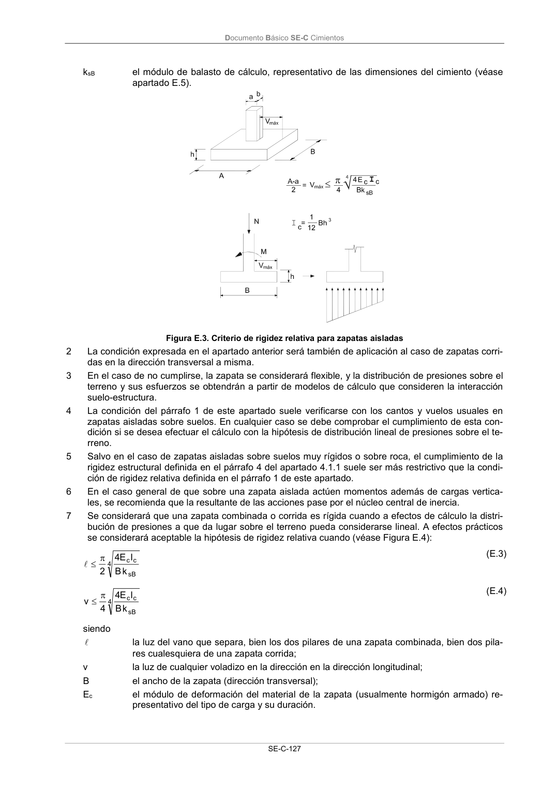

DB-SE-C · E.3 Criterios de rigidez para cimentaciones directas · versión 2019-12-20 · capa oficial
Formatos: JSON compacto · Markdown · PDF fuente
Ámbito del documento · texto del ámbito · documento y tablas
ID técnico a0246 · PDF pág. 131-133 · jerarquía no validada por persona · contrastado con el literal de la página 131 (candidato tipográfico); no validado por persona · padre: raíz
E.3 Criterios de rigidez para cimentaciones directas 1 Se podrá considerar que una zapata aislada es rígida (concepto de rigidez relativa) cuando a efec- tos de cálculo, la distribución de presiones a que de lugar sobre el terreno pueda considerarse li- neal. A efectos prácticos, se considerará aceptable la hipótesis de rigidez relativa cuando (Figura E.3): 4 sB c c k B I E 4 4 v (E.2) siendo v el vuelo de la zapata en una dirección cualquiera; Ec el módulo de deformación del material de la zapata (usualmente hormigón armado) re- presentativo del tipo de carga y su duración; Ic el momento de inercia de la sección de la zapata perpendicular a la dirección del vuelo considerado respecto a la horizontal que pasa por su centro de gravedad; B el ancho de la zapata en dirección perpendicular al vuelo considerado. Documento Básico SE-C Cimientos SE-C-127 ksB el módulo de balasto de cálculo, representativo de las dimensiones del cimiento (véase apartado E.5). Figura E.3. Criterio de rigidez relativa para zapatas aisladas 2 La condición expresada en el apartado anterior será también de aplicación al caso de zapatas corri- das en la dirección transversal a misma. 3 En el caso de no cumplirse, la zapata se considerará flexible, y la distribución de presiones sobre el terreno y sus esfuerzos se obtendrán a partir de modelos de cálculo que consideren la interacción suelo-estructura. 4 La condición del párrafo 1 de este apartado suele verificarse con los cantos y vuelos usuales en zapatas aisladas sobre suelos. En cualquier caso se debe comprobar el cumplimiento de esta con- dición si se desea efectuar el cálculo con la hipótesis de distribución lineal de presiones sobre el te- rreno. 5 Salvo en el caso de zapatas aisladas sobre suelos muy rígidos o sobre roca, el cumplimiento de la rigidez estructural definida en el párrafo 4 del apartado 4.1.1 suele ser más restrictivo que la condi- ción de rigidez relativa definida en el párrafo 1 de este apartado. 6 En el caso general de que sobre una zapata aislada actúen momentos además de cargas vertica- les, se recomienda que la resultante de las acciones pase por el núcleo central de inercia. 7 Se considerará que una zapata combinada o corrida es rígida cuando a efectos de cálculo la distri- bución de presiones a que da lugar sobre el terreno pueda considerarse lineal. A efectos prácticos se considerará aceptable la hipótesis de rigidez relativa cuando (véase Figura E.4): 4 sB c c k B I E 4 2 l (E.3) 4 sB c c k B I E 4 4 v (E.4) siendo l la luz del vano que separa, bien los dos pilares de una zapata combinada, bien dos pila- res cualesquiera de una zapata corrida; v la luz de cualquier voladizo en la dirección en la dirección longitudinal; B el ancho de la zapata (dirección transversal); Ec el módulo de deformación del material de la zapata (usualmente hormigón armado) re- presentativo del tipo de carga y su duración. Documento Básico SE-C Cimientos SE-C-128 Ic el momento de inercia de la zapata en un plano vertical, transversal (perpendicular al plano de alineación de pilares), respecto a la horizontal que pasa por su centro de gra- vedad. ksB el módulo de balasto de cálculo, representativo de las dimensiones del cimiento (véase apartado E.5). Figura E.4. Criterio de rigidez relativa para zapatas combinadas y corridas 8 En el caso de no cumplirse la condición anterior la zapata se considerará flexible. 9 A efectos de cálculo y para los cantos habituales, las zapatas corridas que se empleen para el apo- yo de 3 o más pilares, los emparrillados y las losas, se diseñarán mediante el empleo de modelos de cálculo que tengan en cuenta la interaccción suelo-estructura. No obstante se considerará que estos elementos son rígidos y que la distribución de presiones en el suelo es lineal cuando se cum- plan simultáneamente las condiciones de rigidez definidas en el párrafo 3 del apartado E.2 y en el párrafo 7 de este apartado.


PDF fuente redistribuible: copia fiel enlazada en esta página (SHA256 verificado).